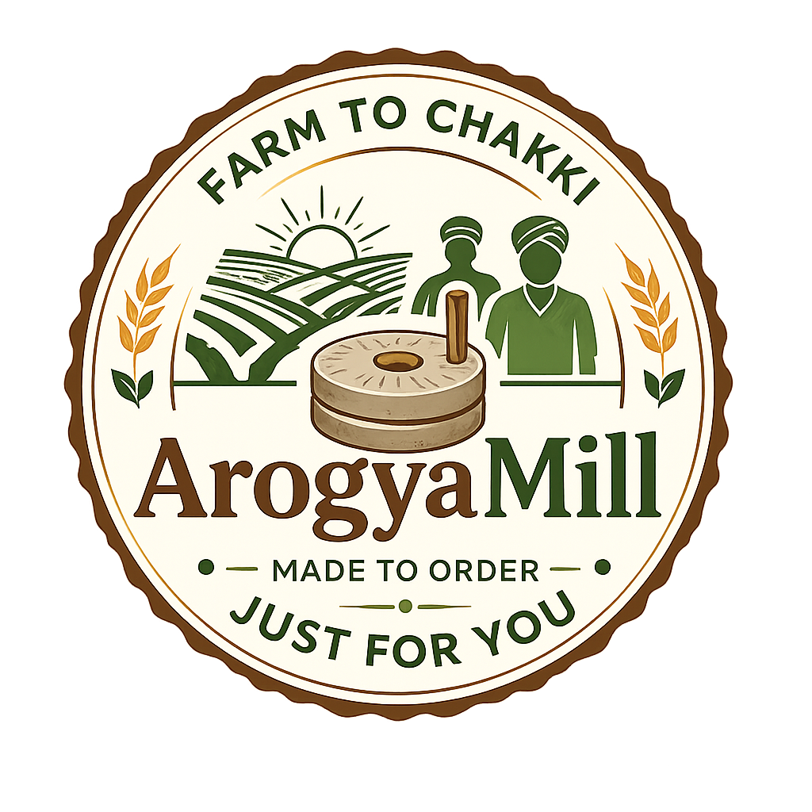
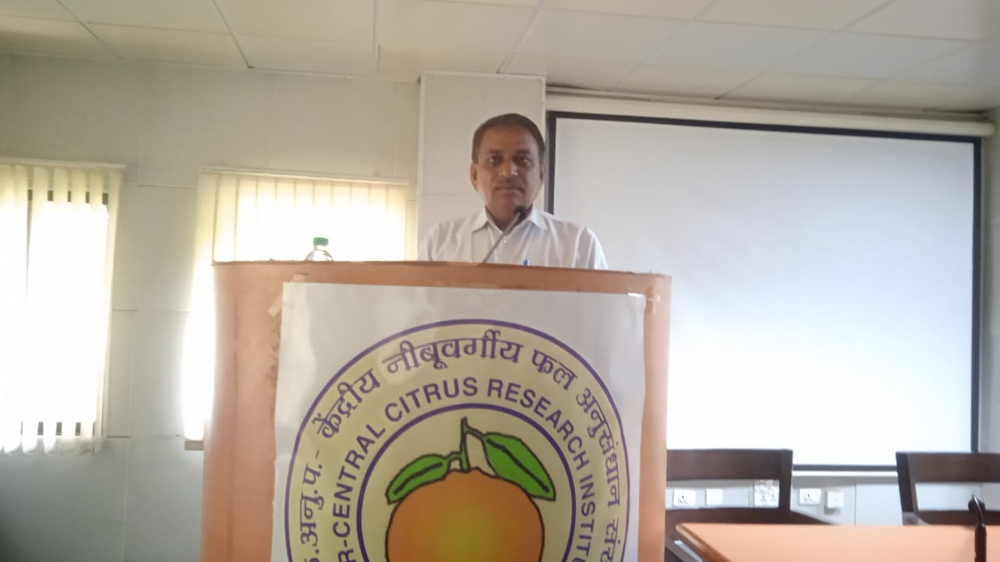
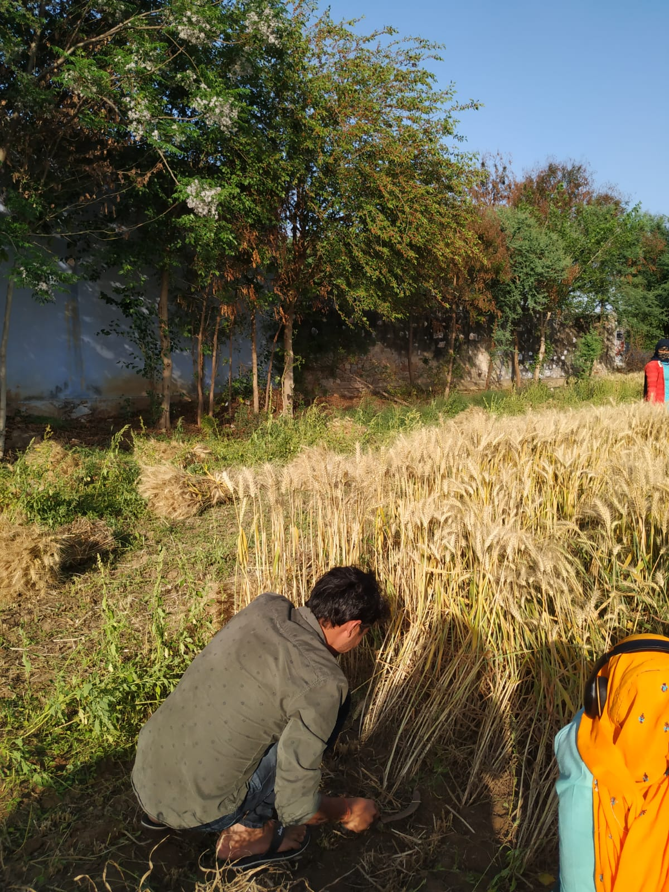
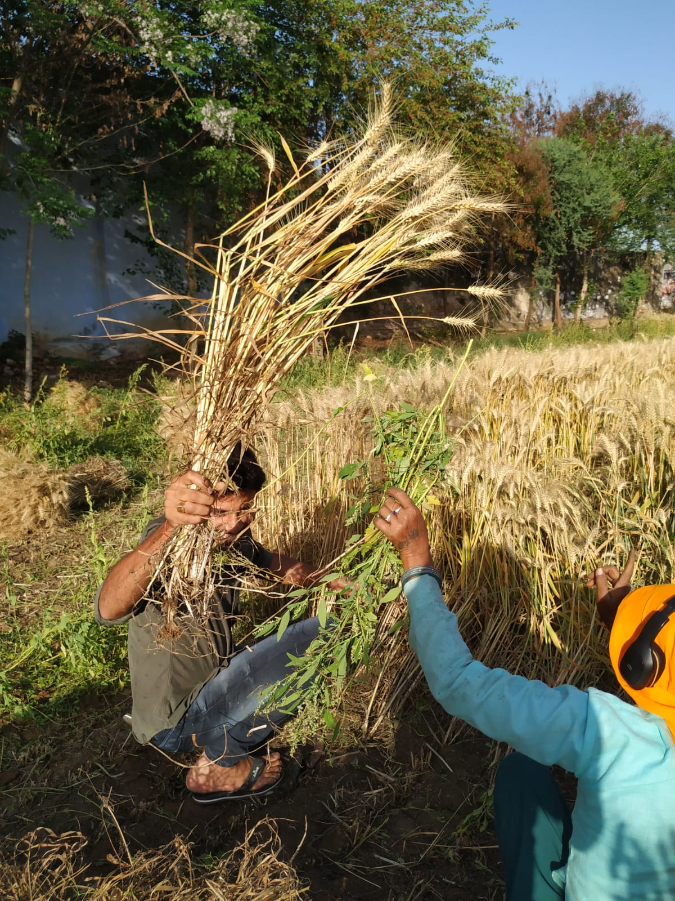
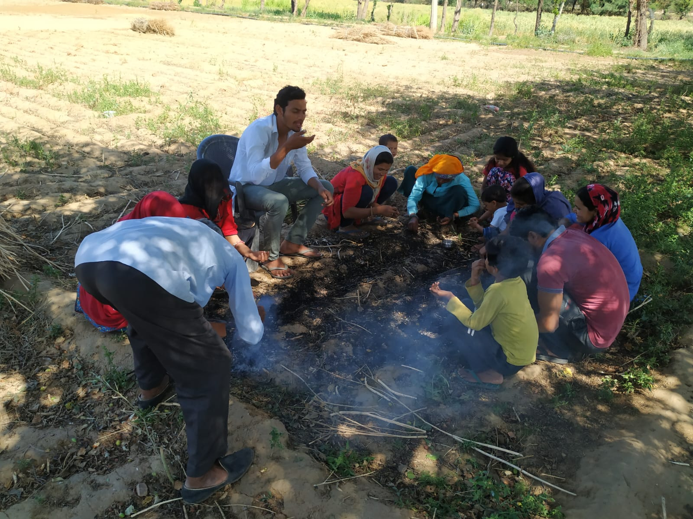

Medium-level Farmer | Traditional Farming Advocate
Ramdayal Patidar is an active and engaged farmer deeply involved in agricultural activities and farmer-related issues. Connected with farming communities, he shows genuine interest in the upliftment of farmers and addresses their practical challenges to improve their livelihoods. His diverse farming approach and family involvement reflect his commitment to sustainable agriculture and rural development.
Philosophy: "Through traditional knowledge and practical experience, we cultivate not just crops but also the future of our farming communities. Every harvest is a step towards better livelihoods for our families and neighbors."
Our farms are strategically located in regions with ideal climate conditions for wheat cultivation. The fertile soil combined with proper irrigation systems ensures premium quality grain production.
📍 Primary Farm Location:
Agricultural Belt, Madhya Pradesh Region
🌡️ Climate Advantages:
💧 Irrigation:
Flood irrigation (better availability of water for wheat crop)
🌱 Soil Type:
Rich, nutrient-dense black-cotton soil ideal for wheat cultivation
📏 Farm Size:
Total 40Acre land distributed in approx 1 acre size small farms for Individual care at small scale
Witness the journey from field to mill through our harvest season collection:

Wheat ready for harvest

Careful collection of grain

Farmers and family sharing stories, rest, and celebration after a successful harvest.